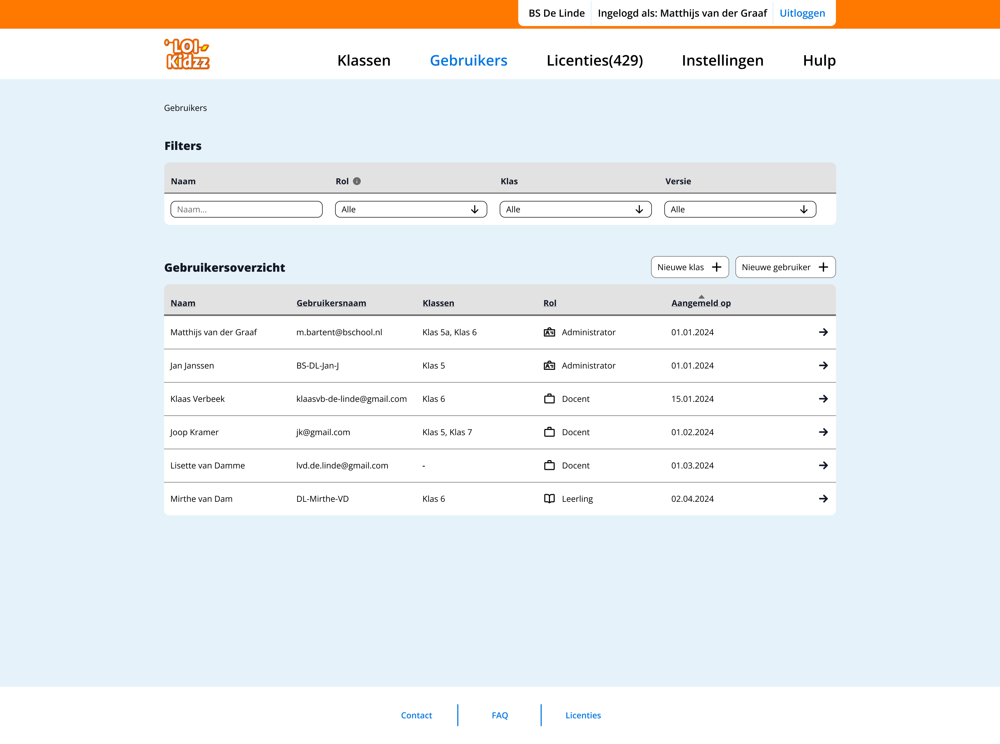
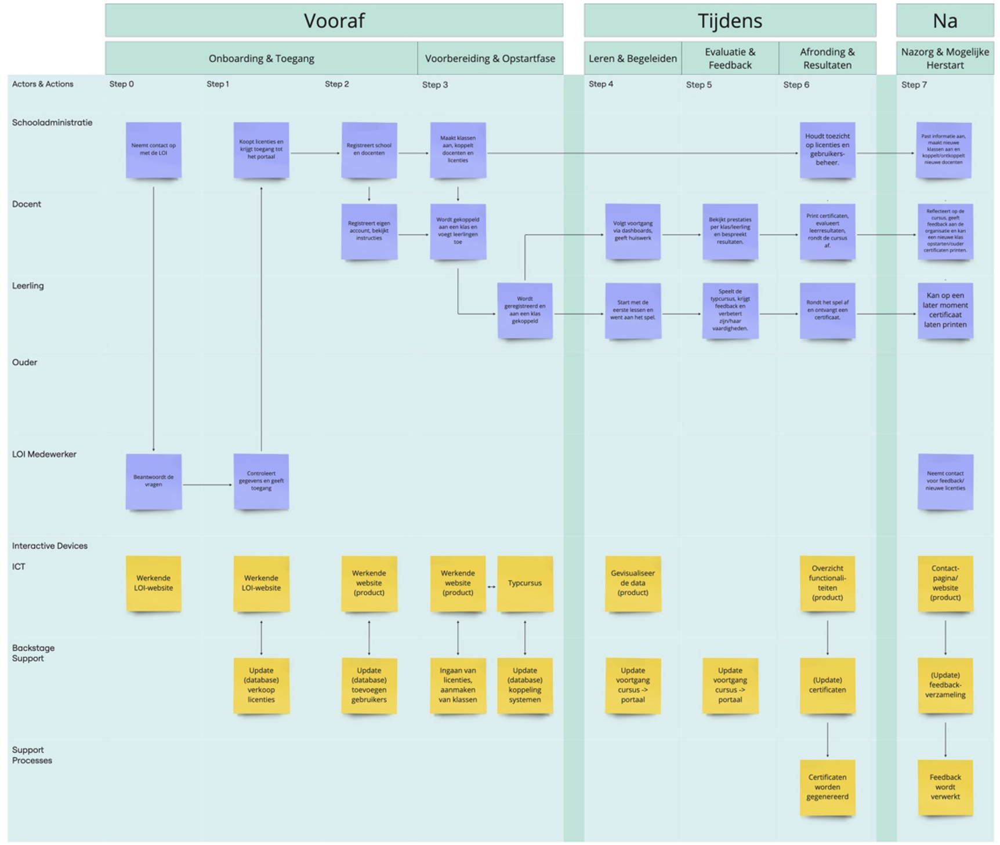

User overview & filtering

Admins can quickly find and manage users using filters. The overview displays key information such as roles, class assignments and registration details.

I'm a UX/UI Designer focused on digital health and accessibility, with a strong interest in complex, research-driven products.
I work at the intersection of user research and systems thinking and translated complexity into clear structures, user flows and scalable design solutions. During my studies, I combined an accelerated graduation track with 1.5 years of professional experience, which helped me move beyond visual design into problem framing, user journeys and product-level thinking.
I'm particularly interested in designing for complex environments like healthcare and education, where clarity, reliability and accessibility have a real impact.
Currently open to junior UX roles in research-driven teams, as well as selective freelance collaborations.
| k.korytska@gmail.com | |
| linkedin.com/in/karina-korytska | |
| Dribbble | dribbble.com/karinakorytska |

UX/UI designer
Internship project for LOI Kidzz
Dashboard UX, multi-role flows, usability testing
This project focuses on designing a teachers dashboard for LOI Kidzz, supporting digital typing classes within the existing course Super Spy School. The goal was to redesign an outdated interface while working within strict technical, visual and budget constraints. The platform needed to support both teachers and administrators, while helping teachers effectively manage classes and monitor student progress
The main challenge was to improve usability within strong constraints:
This required prioritising the most impactful features instead of redesigning the entire system.
The design focused on the most valuable tools for teachers:

Mapping system roles, interactions and dependencies

Admins can quickly find and manage users using filters. The overview displays key information such as roles, class assignments and registration details.

Admins can manage users within a class, including adding or removing students and teachers. Navigation is supported through breadcrumbs, while icons enable quick actions.

Admins can create new users by selecting roles such as student or teacher. Contextual help (tooltips) supports decision-making during the process.

Teachers and admins can access detailed weekly performance data and personalised feedback for each student.
Design decisions were guided by the goal of reducing cognitive load for teachers while supporting meaningful interpretation of student performance.
Shifting from daily to weekly progress
Daily tracking created unnecessary pressure and noise. A weekly overview provides clearer patterns and supports more actionable insights for teachers.
Simplifying data visualisation
Complex graphs were reduced to more readable formats, allowing teachers to quickly interpret student progress without additional cognitive effort.
Designing for support, not pressure
Instead of ranking students publicly, the interface highlights those who may need attention. This shifts the focus from competition to support.
Reframing performance as learning styles
Rather than comparing students through a single performance metric, progress was approached as a balance between speed and accuracy. This allows students to be understood through different learning patterns (e.g. fast typists vs accurate typists), reducing negative comparison and supporting more personalised feedback.
These decisions reflect a focus on responsible and context-aware design in educational environments.
The project included being in close contact with all stakeholders: the client, the management team, developers, and potential users (for testing). The process followed an iterative approach with the following main structure:
Research
Concept design
Usability testing
Refinement
The concept was tested with teachers to validate:
Feedback was used to refine flows and interface decisions.
This project strengthened my ability to:
It also shifted my focus from interface design to system-level thinking.